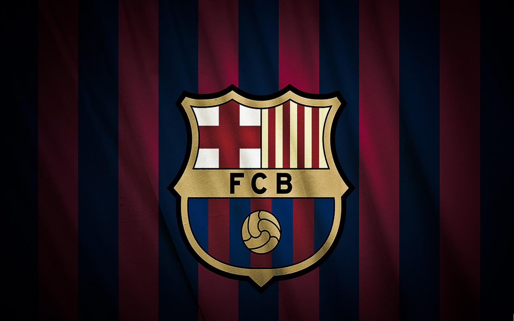
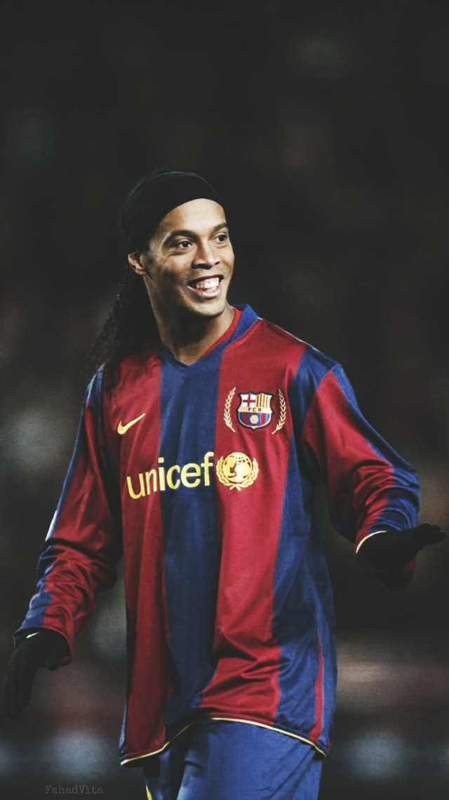

FC BARCELONA
Величичайшие футболисты клуба
Рональдиньо
Футболист который показал что можно творить магию вне хогвартса,на футбольном поле. Провёл 207 матчей и забил 94 гола за Барселону.В 2004 году получил титул лучшего футболиста мира по версии ФИФА.в 2005 году получил "Золотой мяч".В 2006 году признан лучшим игроком Лиги чемпионов.
Карлес Пуйоль

Величайший капитан золотой эпохи "Барселоны".Мог преследовать игрока даже до ворот ада,что бы вернуть себе мяч.Шесть титулов чемпиона Испании, два Кубка страны, три трофея Лиги чемпионов.
Лионель Месси

Лучший бомбардир в истории "Барселоны". Обладатель десяти титулов чемпиона Испании, четырёх титулов Лиги чемпионов, шести кубков Испании, восьми суперкубков Испании, трёх Суперкубков Европы и трёх Кубков клубного чемпионата мира. Провёл 778 матчей за "Барселону" и забил 672 мяча.